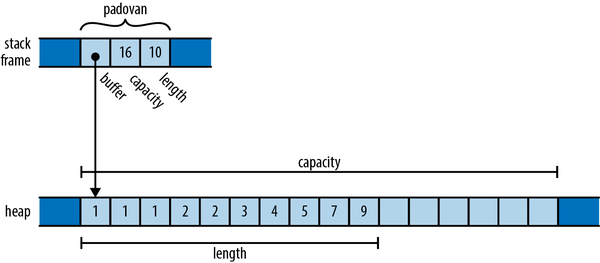
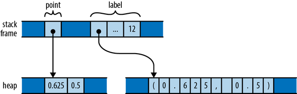
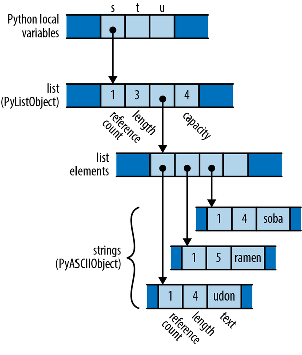
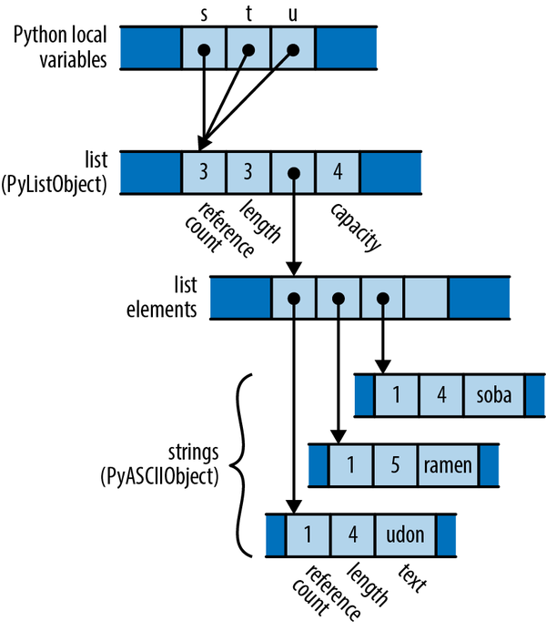
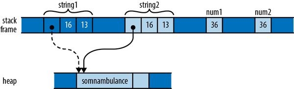
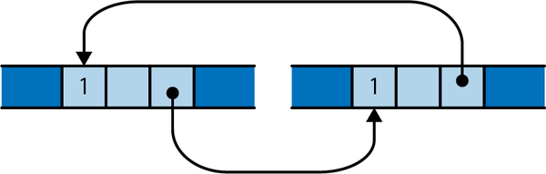

第四章 所有权与移动
在内存管理方面，我们希望编程语言具备两个特性：
-
我们希望能够在我们选择的时间迅速释放内存。这样就能让我们控制程序的内存使用情况了。 -
我们永远都不应该在对象被释放之后仍然使用指向该对象的指针。这种行为会导致不可预知的行为，从而引发崩溃和安全漏洞。
不过，这些似乎是相互排斥的：在仍然存在指向该值的指针的情况下释放该值，必然会使得这些指针变得无效。几乎所有的主流编程语言都属于这两类之一，具体取决于它们放弃了哪种特性：
-
“安全第一”这一编程范式采用垃圾收集机制来管理内存，当所有指向这些对象的指针都不再存在时，系统会自动释放相关对象。这样就能避免悬空指针的出现，因为只需保留这些对象，直到再也没有指针指向它们为止。几乎所有的现代编程语言都属于这一类别，从 Python、JavaScript 和 Ruby 到 Java、C#和 Haskell 等语言。但是，依赖垃圾回收机制意味着我们需要将对象何时被释放的控制权交给垃圾回收器。一般来说，垃圾回收器非常强大，而要理解为什么在预期的时间内内存并没有被释放，确实是一个挑战。
-
“先控制再处理”这一阵营让开发者负责管理内存的释放问题。程序的内存占用完全取决于开发者自己，不过避免指针悬空的问题也完全需要开发者自己来处理。C 语言和 C++是这一阵营中唯一的主流编程语言。
如果你永远不犯错的话，那当然很好了。不过，证据表明，最终你还是会犯错的。自从收集到这些数据以来，滥用指针就一直被认为是导致安全问题的常见原因。
Rust 以一种出人意料的方式打破了这种僵局：它通过制定一些规则来限制程序如何使用指针，从而为混乱的局面带来了必要的秩序。这种规则使得 Rust 的编译时检查能够验证程序是否不存在内存安全错误。在编译阶段，Rust 会记录值是在何时何地被创建和使用的，从而跟踪每个值的所有权。这样就能避免使用未初始化的值，并且只会在这些值不再需要时将其释放掉，从而避免双重释放错误。编译器还会分析对这些值的引用，以防止使用悬空指针。在运行时，你的指针只是内存中的普通地址而已，这与 C 和 C++中的情况类似。不同的是，你的代码已经证明了它们可以安全地使用这些指针。
这些规则同样构成了 Rust 在安全并发编程方面的支持基础。通过 Rust 精心设计的线程原语，那些确保代码正确使用内存的规则也保证了程序不会引发数据竞争问题。在 Rust 程序中，一个错误不会导致某个线程破坏另一个线程的数据，从而避免在整个系统不同部分出现难以重现的故障。多线程代码中固有的不确定性会被限制在那些专门用于处理这种问题的特性中——比如互斥量、消息通道、原子值等——而不会出现在普通的内存引用中。C 和 C++中的多线程代码因其复杂性而名声不佳，但 Rust 却很好地解决了这个问题。
Rust 这一激进的承诺——即不惜付出成功作为代价来追求这一目标，这也是该语言的核心价值所在——是：即便存在这些限制，该语言依然足够灵活，足以应对几乎所有任务。而所带来的好处——比如消除了大量内存管理和并发相关的错误——将足以证明你为适应这种语言而进行的调整是值得的。这本书的作者之所以看好 Rust，正是因为我们有着丰富的 C 和 C++的经验。对我们来说，Rust 的优势简直是显而易见的。
Rust 的规则可能与其他编程语言有所不同。学会如何运用这些规则并将其转化为自己的优势，在我们看来，正是学习 Rust 的核心挑战。在本章中，我们将首先探讨 Rust 规则背后的逻辑和意图，通过对比其他语言中的类似问题来更好地理解这一点。然后，我们将详细解释 Rust 的规则，从概念层面和机制层面来解析“所有权”这一概念的含义，以及在不同情况下如何跟踪所有权的变更。此外，我们还会介绍一些能够打破这些规则的类型，从而提供更大的灵活性。
所有权
如果你读过大量的 C 或 C++代码，那么你很可能遇到过这样的注释：某个类的实例拥有另一个对象，并且该实例可以指向这个对象。这通常意味着拥有该对象的对象可以决定何时释放该对象所拥有的对象——当拥有该对象的对象被销毁时，它就会同时释放所拥有的对象。
例如，假设您编写了以下 C++代码：
std::strings="frayed knot";
在内存中，字符串 s 的表示方式大致如图 4-1 所示。

图 4-1：栈上的 C++ std::string 值，指向其堆分配的内存缓冲区
在这里，实际的 std::string 对象本身有一个固定的大小，即三个机器字长。这个对象包含了一个指向堆内存中缓冲区的指针，该缓冲区的总容量（即文本可以增长的最大尺寸，超过这个尺寸后，字符串就需要分配更大的缓冲区来容纳更多内容），以及当前所保存的文本的长度。这些字段都是 std::string 类独有的属性，字符串的使用者无法访问这些字段。
某个 std::string 拥有自己的缓冲区：当程序销毁该字符串时，该字符串的销毁函数会释放缓冲区。在过去，一些 C++库会在多个 std::string 对象之间共享一个缓冲区，并通过引用计数来决定何时释放该缓冲区。不过，最新的 C++规范已经不再允许这种分配方式；所有现代 C++库都采用这种方式来处理缓冲区管理问题。
在这种情况下，通常的理解是：虽然其他代码可以创建指向所拥有内存的临时指针，但确保这些指针在拥有者决定销毁所拥有的对象之前就失效，这是该代码的职责。你可以创建一个指向 std::string 的缓冲区中某个字符的指针，但当字符串被销毁时，这个指针就变得无效了，此时你需要确保不再使用这个指针。拥有者决定了所拥有对象的生命周期，而其他人都必须遵守其决定。
然而，在 Rust 语言中，所有权的概念是内置在语言本身中的，并且通过编译时的检查来强制执行。每个值都有一个所有者，这个所有者决定了该值的生命周期。当所有者释放了——用 Rust 的术语来说就是“被丢弃”——那么该值也就被释放了。这些规则使得你只需通过检查代码就能轻松找到某个值的生命周期，从而获得了系统语言所应具备的对值生命周期的控制能力。
一个变量拥有其自身的值。当控制流离开声明该变量的代码块时，该变量就会被释放，其值也随之消失。例如：
fnprint_padovan(){letmutpadovan=vec![1,1,1];// allocated hereforiin3..10{letnext=padovan[i-3]+padovan[i-2];padovan.push(next);}println!("P(1..10) = {padovan:?}");}// dropped here
变量 padovan 的类型是 Vec<i32> ，它是一个 32 位整数的向量。在内存中，变量 padovan 的最终值会呈现如图 4-2 所示的样子。

图 4-2：栈顶有一个 Vec<i32> 对象，它指向堆中的缓冲区。
这与我们之前介绍的 C++语言中的情况非常相似。不过，这里的缓冲区内存储的是 32 位值，而不是字符。需要注意的是，那些包含 padovan 的指针、容量以及长度的变量直接存储在 print_padovan 函数的堆栈帧中；而向量本身的缓冲区则是在堆内存中分配空间的。
Rust 中的 Box 类型又是一个例子。 Box<T> 是一个指向存储在堆中的 T 类型值的指针。调用 Box::new(v) 会分配一些堆空间，将值 v 移动到该空间，并返回一个指向该堆空间的 Box 。由于 Box 拥有它所指向的空间，因此当 Box 被销毁时，它也会释放该空间。
例如，你可以像这样在堆中分配一个元组：
{letpoint=Box::new((0.625,0.5));// point allocated hereletlabel=format!("{point:?}");// label allocated hereassert_eq!(label,"(0.625, 0.5)");}// both dropped here
当程序调用 Box::new 时，它会先在堆中为包含两个 f64 值的元组分配空间，然后将参数 (0.625, 0.5) 放入该空间中，并返回对该空间的指针。当控制再次回到 assert_eq! 的调用时，栈帧的状态如图 4-3 所示。

图 4-3. 两个局部变量，每个变量都在堆内存中拥有自己的内存空间
这个栈帧本身包含了两个变量 point 和 label ，这两个变量分别指向了它所拥有的堆内存分配空间。当这些变量被释放时，它们所拥有的堆内存分配空间也会被一同释放。
就像变量拥有自己的值一样，结构体与元组拥有各自的字段，而数组和向量则拥有各自的元素。
structPerson{name:String,birth:i32,}letmutcomposers=Vec::new();composers.push(Person{name:"Palestrina".to_string(),birth:1525,});composers.push(Person{name:"Dowland".to_string(),birth:1563,});composers.push(Person{name:"Lully".to_string(),birth:1632,});forcomposerin&composers{println!("{}, born {}",composer.name,composer.birth);}
在这里， composers 是一个 Vec<Person> ，即一个包含多个结构的向量。每个结构都包含一个字符串和一个数字。在内存中， composers 的最终形态如图 4-4 所示。

图 4-4. 更为复杂的所有权结构图
这里存在许多所有权关系，但每一种关系都相当简单明了： composers 拥有一个向量；该向量拥有其各个元素，每个元素都是一个 Person 结构；每个结构又拥有其各个字段；而字符串字段则拥有其文本内容。当控制流离开声明 composers 的作用域时，程序会放弃该值，并带着整个结构一起消失。如果还有其他类型的集合存在——比如 HashMap 或 BTreeSet ——情况也会是一样的。
因此，所有者和他们所拥有的对象就构成了一棵棵树结构：你的所有者就是你的父母，而你所拥有的对象则相当于你的孩子。每棵树的根都是一个变量；当这个变量超出作用域时，整棵树也就随之消失了。我们可以在 composers 的图中看到这样的树结构：它并不是以搜索树数据结构或由 DOM 元素构成的 HTML 文档的形式存在的。相反，这棵树是由多种类型组合而成的，而 Rust 的单所有者规则避免了任何可能使结构变得更复杂的重新连接操作。在 Rust 程序中，每个对象都属于某棵树，并且都根植于某个变量之中。
在 Rust 程序中，通常不会像在 C 或 C++程序中那样直接删除变量。在 Rust 中，要删除一个变量，就需要以某种方式将其从所有权树中移除：比如让变量离开其作用域，或者从向量中删除某个元素，诸如此类的方法。通过这种方式，Rust 能够确保该变量及其所拥有的所有内容都得到了正确的处理，从而真正地“删除”了它。
在某种程度上，Rust 的功能比其他语言要弱一些：其他所有实用的编程语言都能让你构建任意对象之间的关联，而这些对象可以以你认为合适的方式相互指向。但正因为 Rust 的功能相对较弱，所以它对程序的分析能力反而更为强大。Rust 的安全性保障之所以能够实现，正是因为它在你的代码中遇到的关系更为易于处理。这正是我们之前提到的 Rust 的“激进承诺”的一部分：实际上，Rust 认为，在解决问题时，通常有足够的灵活性，以至于至少有一些完全可行的解决方案仍然可以在语言所设定的限制范围内得到实现。
不过，正如我们所解释的那样，目前所理解的所有权概念过于僵化，甚至无法应用于那些相对简单的程序。Rust 的设计在几个方面解决了这一问题：
-
你可以将数值从一个所有者转移到另一个所有者手中。这样就能让你构建、重新安排或拆除树状结构了。
-
像整数、浮点数和字符这样非常简单的类型可以免于遵循所有权规则。这些类型被称为
Copy类型。 -
标准库提供了引用计数指针类型
Rc和Arc，这些类型允许值拥有多个拥有者，但有一些限制条件。 -
你可以“借用一个引用”来指向某个值；引用是一种非所有权的指针，其生命周期有限。
这些策略每一种都为所有权模式带来了灵活性，同时仍然符合 Rust 的承诺。我们将在下一章分别介绍每一种策略，并给出相关的参考内容。
移动
在 Rust 中，对于大多数类型来说，像将值赋给变量、将其传递给函数，或者从函数中返回值这样的操作并不会复制该值。这些操作只是将值从一个位置移动到另一个位置而已。源位置会放弃对该值的所有权，使其变为未初始化的状态；而目标位置则开始控制该值的生命周期。Rust 程序会逐个处理复杂的结构，一次只处理一个值，通过一次移动来完成这些操作。
你可能会惊讶于 Rust 竟然改变了如此基本操作的含义；在现在这个时代，变量的赋值应该已经相当明确了吧。不过，如果你仔细看看不同语言在处理变量赋值方面的做法，你会发现各学派之间其实存在很大的差异。这种对比也让我们更容易理解 Rust 这种选择的含义和后果。
请考虑以下 Python 代码：
s=['udon','ramen','soba']t=su=s
每个 Python 对象都有一个引用计数，该计数记录了当前指向该对象的数值的个数。因此，在将变量赋值给 s 之后，程序的状态就像图 4-5 所示（注意，有些字段被省略了）。

图 4-5. Python 如何在内存中表示字符串列表
当程序执行对 t 和 u 的赋值操作时，会发生什么？Python 通过让赋值对象指向与源对象相同的对象，并增加该对象的引用计数来实现赋值操作。因此，程序的最终状态类似于图 4-6 所示。

图 4-6. 在 Python 中，将 s 同时赋值给 t 和 u 的结果
现在来看看类似的 C++代码：
usingnamespacestd;vector<string>s={"udon","ramen","soba"};vector<string>t=s;vector<string>u=s;
在内存中， s 的原始值类似于图 4-7 所示。
当程序将 s 赋值给 t 和 u 时会发生什么？将 std::vector 赋值给某个变量后，会在 C++中创建一个向量的副本； std::string 的行为也类似。因此，当程序执行到这段代码的末尾时，实际上已经分配了三个向量和九个字符串（见图 4-8）。

图 4-7. C++是如何在内存中表示字符串向量的

图 4-8. 在 C++中，将 s 同时赋值给 t 和 u 的结果
根据所涉及的变量值，C++中的变量分配可能会占用无限量的内存和处理器时间。不过，其优点在于程序可以轻松决定何时释放这些内存——当变量超出作用域时，所有已分配的内存都会自动被释放。
从某种意义上说，C++和 Python 选择了不同的权衡方案：Python 通过牺牲引用计数机制来降低赋值的成本，而 C++则通过让对象的所有权保持清晰来降低成本。不过，C++程序员对这种选择往往不太满意：深度复制可能会带来较高的性能开销，而且通常存在更实用的替代方案。
那么，类似的程序用 Rust 语言实现会是什么样呢？以下是对应的代码：
lets=vec!["udon".to_string(),"ramen".to_string(),"soba".to_string()];lett=s;letu=s;
在完成了 s 的初始化之后，由于 Rust 和 C++在向量和字符串的表示方式上非常相似，因此实际情况与在 C++中的情况完全相同（见图 4-9）。

图 4-9. Rust 是如何在内存中表示一个字符串向量的
不过需要注意的是，在 Rust 中，大多数类型的赋值操作都会将值从源对象移动到目标对象，而源对象本身则会被置为未初始化状态。因此，在初始化了 t 之后，程序的内存状态就像图 4-10 所示。

图 4-10. 在 Rust 语言中，将 s 赋值给 t 的结果
这里发生了什么？初始化操作使得向量的三个头部字段从 s 移动到了 t 的位置；现在 t 拥有了该向量。向量的各个元素仍然保持在原来的位置，字符串也没有发生任何变化。每个值仍然都有一个所有者，只不过所有权已经发生了变更。无需调整引用计数。现在，编译器认为 s 尚未初始化。
那么，当我们执行初始化语句时会发生什么呢？此时，未初始化的值 s 会被赋给 u 。不过，Rust 严格禁止使用未初始化的值，因此编译器会拒绝执行这段代码，并抛出如下错误：
error: use of moved value: `s`|7 | let s = vec!["udon".to_string(), "ramen".to_string(), "soba".to_string()];| - move occurs because `s` has type `Vec<String>`,| which does not implement the `Copy` trait8 | let t = s;| - value moved here9 | let u = s;| ^ value used here after move
考虑一下 Rust 在此处使用移动操作的后果。与 Python 类似，这种操作代价很低：程序只是简单地将向量中三个单词的头部从一个位置移动到另一个位置。但是与 C++类似，所有权始终非常明确：程序无需依赖引用计数或垃圾回收机制，就能知道何时释放向量中的元素和字符串内容。
你不得不付出的代价是，当你需要复制结构时，必须明确请求副本。如果你想达到与图 4-8 中的 C++程序相同的状态——即每个变量都持有结构的独立副本，那么你就必须调用向量的 clone 方法，该方法会执行向量的深度复制操作，包括其各个元素。
lets=vec!["udon".to_string(),"ramen".to_string(),"soba".to_string()];lett=s.clone();letu=s.clone();
你还可以利用 Rust 的引用计数指针类型来模拟 Python 的行为（见图 4-6）；我们在“Rc 和 Arc：共享所有权”这一章节中会详细讨论这一点。
更多能够移动物体的操作
在之前的例子中，我们展示了如何为变量提供初始值，这些值会在 let 语句中引入作用域时赋予变量。而将值赋给一个变量则略有不同：如果你将一个值赋给一个已经初始化的变量，Rust 会清除该变量之前的值。例如：
letmuts="Govinda".to_string();s="Siddhartha".to_string();// value "Govinda" dropped here
在这段代码中，当程序将字符串 "Siddhartha" 赋值给 s 时，先会丢弃之前的值 "Govinda" 。不过，请考虑以下情况：
letmuts="Govinda".to_string();lett=s;s="Siddhartha".to_string();// nothing is dropped here
这次， t 已经接管了来自 s 的原始字符串，因此当我们将其赋值给 s 时，该字符串已经不再处于未初始化的状态。在这种情况下，没有任何字符串被丢弃。
在这里的例子中，我们使用了初始化和赋值操作，因为它们很简单。不过，Rust 几乎在任何值的使用上都应用了“移动语义”。将参数传递给函数会使所有权转移给函数的参数；从函数中返回值也会使所有权转移给调用者。构建元组时，值会被移动到元组中。以此类推。
现在，你对前一节中提到的示例中的实际情况应该有了更好的了解了。例如，在构建作曲家的向量时，我们写道：
structPerson{name:String,birth:i32,}letmutcomposers=Vec::new();composers.push(Person{name:"Palestrina".to_string(),birth:1525,});
这段代码展示了在初始化和赋值之外，还有多个地方发生了移动操作：
- 从函数中返回值
-
该调用Vec::new()会创建一个新的向量，并返回该向量本身，而不是指向该向量的指针。也就是说，向量所有权从Vec::new转移到了变量composers身上。同样地，to_string的调用也会返回一个新的String实例。 - 创造新的价值
-
新的Person结构的name字段被初始化为to_string的返回值。该结构负责处理这个字符串。 - 将值传递给函数
-
整个Person结构被传递给向量的push方法，该方法将其移动到向量的末尾。这样，向量就拥有了Person的所有权，从而也成为了String名称的间接所有者。
这样进行值的移动听起来可能有些低效，但需要注意两点：首先，这些移动操作都是针对值本身进行的，而不是针对它们所在的堆内存。对于向量和字符串来说，值本身指的是那三个单词构成的数据头；而那些可能包含大量元素的数组和文本缓冲区则保存在堆内存中。其次，Rust 编译器的代码生成机制能够很好地处理所有这些移动操作；实际上，机器代码通常会直接把值存储到它应该所在的位置。
移动与控制流
前面的例子都采用了非常简单的控制流机制；那么，当遇到更复杂的代码时，这些操作该如何处理呢？一般来说，如果一个变量的值已经改变，并且之后又没有重新被赋予新的值，那么就可以认为该变量是未初始化的。例如：
letx=vec![10,20,30];ifc{f(x);// ok to move from x here}h(x);// bad: x may have been moved
出于类似的原因，禁止在循环中修改变量的值：
letx=vec![10,20,30];whilef(){g(x);// bad: x would be moved in first iteration,// uninitialized in second}
也就是说，除非在下一次迭代时我们已经为它赋予了新的价值。
letmutx=vec![10,20,30];whilef(){g(x);// move from xx=h();// give x a fresh value}e(x);
移动和索引内容
我们已经提到过，当进行移动操作时，源地址中的值会被保留下来，而目标地址则负责管理该值。不过，并不是所有类型的值都愿意处于未初始化的状态。例如，考虑以下代码：
// Build a vector of the strings "101", "102", ... "105"letmutv=Vec::new();foriin101..106{v.push(i.to_string());}// Pull out random elements from the vector.letthird=v[2];// error: Cannot move out of index of Vecletfifth=v[4];// here too
要使这一机制生效，Rust 需要某种方式来记住向量的第三个和第五个元素已经初始化失败，并保留这一信息直到向量被丢弃。在最通用的情况下，向量需要携带额外的信息，以表明哪些元素是有效的，哪些已经初始化失败。显然，这种行为并不适合作为一门系统编程语言；向量应该仅仅只是一个向量而已。实际上，Rust 会拒绝上述代码，并抛出如下错误：
error: cannot move out of index of `Vec<String>`|14 | let third = v[2];| ^^^^| || move occurs because value has type `String`,| which does not implement the `Copy` trait| help: consider borrowing here: `&v[2]`
他们还对这次移动操作提出了类似的抱怨。在错误信息中，Rust 建议使用引用方式来处理，这样你就可以在不移动元素的情况下访问该元素。这通常就是你想要的。但是，如果你真的想要将一个元素从向量中移出呢？你需要找到一种能够做到这一点的方法，同时又要考虑到类型的限制。以下是三种可能的解决方案：
// Build a vector of the strings "101", "102", ... "105"letmutv=Vec::new();foriin101..106{v.push(i.to_string());}// 1. Pop a value off the end of the vector:letfifth=v.pop().expect("vector empty!");assert_eq!(fifth,"105");// 2. Move a value out of a given index in the vector,// and move the last element into its spot:letsecond=v.swap_remove(1);assert_eq!(second,"102");// 3. Swap in another value for the one we're taking out:letthird=std::mem::replace(&mutv[2],"substitute".to_string());assert_eq!(third,"103");// Let's see what's left of our vector.assert_eq!(v,vec!["101","104","substitute"]);
这些方法每一种都能将元素从向量中移除，但这样做并不会使向量变得过于拥挤，反而可能会让向量中的元素数量减少一些。
像 Vec 这样的集合类型通常也提供了相应的方法，可以循环遍历其所有元素进行使用。
letv=vec!["liberté".to_string(),"égalité".to_string(),"fraternité".to_string(),];formutsinv{s.push('!');println!("{s}");}
当我们直接将向量传递给循环时，比如在 for ... in v 中，这个向量就会离开 v ，导致 v 保持未初始化的状态。在 for 循环中，内部的机制会接管这个向量，并将其拆分成各个元素。在每次迭代中，循环会将另一个元素赋值给变量 s 。由于 s 现在拥有这个字符串，我们可以在循环体内对其进行修改，然后再进行打印。而且，由于向量本身不再能被代码看到，因此没有任何东西能在循环过程中观察到它处于部分空的状态。
如果你确实需要将某个值移出当前所有者手中，而编译器无法追踪该值的情况，那么你可以考虑修改所有权的类型，使其能够动态判断该值是否存在。例如，以下是之前示例的一个变体：
structPerson{name:Option<String>,birth:i32,}letmutcomposers=Vec::new();composers.push(Person{name:Some("Palestrina".to_string()),birth:1525,});
你不能这样做：
letfirst_name=composers[0].name;
这只会引发之前出现的同样错误：“无法移出索引”。不过，因为您将 name 字段的类型从 String 更改为 Option<String> ，所以 None 就成为该字段合法的取值了，这样操作就可以成功了。
letfirst_name=std::mem::replace(&mutcomposers[0].name,None);assert_eq!(first_name,Some("Palestrina".to_string()));assert_eq!(composers[0].name,None);
replace 的调用会取出 composers[0].name 的值，并将 None 置为新的值，同时将原值的所有权传递给调用者。实际上，通过这种方式使用 Option 是很常见的，以至于该类型还提供了一组 take 方法来实现这一目的。你可以这样更清晰地描述上述操作：
letfirst_name=composers[0].name.take();
这个对 take 的调用与之前对 replace 的调用具有相同的效果。
复制类型：移动的例外情况
我们到目前为止所展示的赋值操作示例，都涉及了向量、字符串以及其他可能需要大量内存且复制成本较高的类型。对于整数或字符这样的简单类型来说，这种精细的处理其实并非必要。
比较当我们分配一个 String 给变量时，内存中会发生什么情况，以及当我们分配一个 i32 值给变量时又会发生什么情况：
letstring1="somnambulance".to_string();letstring2=string1;letnum1:i32=36;letnum2=num1;
执行这段代码后，内存使用情况如图 4-11 所示。

图 4-11：分配 String 会移动该值的位置，而分配 i32 则会复制该值。
与之前的向量一样，赋值操作将 string1 的数据移动到 string2 ，这样我们就不会有两个字符串来负责释放同一个缓冲区。不过， num1 和 num2 的情况有所不同。 i32 仅仅是一个内存中的位模式而已；它并不拥有任何堆资源，也不依赖于除构成它的字节之外的任何东西。当我们把 i32 的位数据移动到 num2 时，我们就得到了一个与 num1 完全独立的副本。
之前我们提到，大多数类型都是被复制的；但现在我们来关注那些例外情况，也就是 Rust 中被称为 Copy 类型的类型。当给 Copy 类型的变量赋值时，实际上是复制了该变量的值，而不是真正地移动它。赋值的源对象仍然保持初始状态，可以正常使用，其值与之前相同。将 Copy 类型的变量传递给函数或构造函数时，其行为也是类似的。
只有那些简单逐位复制就足够的类型才能被复制。正如我们已经解释过的， String 不属于 Copy 类型，因为它拥有一个堆分配的内存缓冲区。出于类似的原因， Box<T> 也不属于 Copy 类型；因为它拥有一个堆分配的指针。而 File 类型，代表一个操作系统文件句柄，同样不属于 Copy 类型；因为复制这样的对象需要操作系统再次分配一个新的文件句柄。同样地， MutexGuard 类型，代表一个被锁定的互斥锁，也不属于 Copy 类型：因为互斥锁只能被一个线程持有，所以复制这种类型是没有意义的。
一般来说，任何在值被释放时需要执行特殊操作的类型都不适合使用这种机制。例如，某种类型需要释放其元素；另一种类型则需要关闭其文件句柄；还有另一种类型则需要解锁其互斥锁，等等。如果逐位重复这些类型的操作，那么就无法明确哪个值现在负责管理原始对象的资源了。
那么，那些由用户自己定义的类型呢？默认情况下， struct 和 enum 类型的变量并不属于 Copy 类型。
structLabel{number:u32,}fnprint_label(l:Label){println!("STAMP: {}",l.number);}letl=Label{number:3};print_label(l);println!("My label number is: {}",l.number);
这段代码无法编译；Rust 编译器提示错误：
error: borrow of moved value: `l`|10 | let l = Label { number: 3 };| - move occurs because `l` has type `main::Label`,| which does not implement the `Copy` trait11 | print_label(l);| - value moved here12 | println!("My label number is: {}", l.number);| ^^^^^^^^| value borrowed here after move
由于 Label 并不等于 Copy ，因此将 Label 传递给 print_label 并不会改变其所有权，所有权仍然属于 print_label 函数。不过，这种做法其实很愚蠢； Label 不过是一个伪装成 u32 的东西罢了。没有理由将 l 传递给 print_label 之后，所有权还能被改变。
不过，用户自定义类型并非总是如此——它们只是默认情况而已。如果你结构中的所有字段本身都是 Copy 类型，那么你可以通过在定义之前添加 #[derive(Copy, Clone)] 属性来使该类型变为 Copy 类型，具体做法如下：
#[derive(Copy, Clone)]structLabel{number:u32,}
通过这一修改，前面的代码就可以无问题地编译了。不过，如果我们尝试在那些字段不全都是 Copy 的类型上使用这段代码，那么它就不会起作用了。假设我们编译以下代码：
#[derive(Copy, Clone)]structStringLabel{name:String,}
这引发了以下错误：
error: the trait `Copy` cannot be implemented for this type|7 | #[derive(Copy, Clone)]| ---- in this derive macro expansion8 | struct StringLabel {| ^^^^^^^^^^^9 | name: String,| ------------ this field does not implement `Copy`
为什么用户定义的类型不会自动被 Copy 标记出来呢？假设这些类型是有效的的话。一个类型是否是 Copy 标记出来的，会对代码如何使用该类型产生很大的影响： Copy 标记的类型更加灵活，因为对它们的赋值及相关操作不会使原始类型保持未初始化的状态。但对于类型的实现者来说，情况则恰恰相反： Copy 标记的类型在包含其他类型方面受到了很大的限制，而非 Copy 标记的类型则可以进行堆分配，并拥有其他类型的资源。因此，将一个类型标记为 Copy 标记，对于实现者来说是一个重大的承诺：如果之后需要将其改为非 Copy 标记，那么使用该类型的许多代码可能需要进行相应的调整。
虽然 C++允许我们重载赋值运算符，并定义专门的拷贝和移动构造函数，但 Rust 并不允许这种程度的定制。在 Rust 中，每次移动操作都是逐位拷贝，这种拷贝方式不会使源对象处于未初始化的状态。不过，拷贝操作本身是相同的，只是源对象在拷贝过程中仍然处于初始化状态。这意味着 C++中的类可以提供 Rust 类型无法实现的便捷接口，比如通过看似普通的代码来隐式处理引用计数问题，或者推迟进行昂贵的拷贝操作，或者采用其他复杂的实现技巧。
在这一部分中，我们简要介绍了 Copy 和 Clone 作为类型可能具有的特性。实际上，这些都属于“特质”的范畴——Rust 提供了一种灵活的机制，可以根据这些类型所能够执行的操作来对其进行分类。关于特质的一般描述，请参考第 11 章的内容；而 Copy 和 Clone 的具体介绍则位于第 13 章中。
Rc 和 Arc：共享所有权
虽然在典型的 Rust 代码中，大多数变量都有唯一的主人，但在某些情况下，很难找到某个变量在所需生命周期内始终由单一主人持有的情况。在这种情况下，Rust 提供了引用计数指针类型 Rc 和 Arc 。正如从 Rust 的特性可以预见的一样，这些指针类型完全安全可靠：不必担心忘记调整引用计数，也不必担心会创建出 Rust 无法识别的指向该对象的其他指针，或者遇到 C++中引用计数指针类型常见的问题。
Rc 和 Arc 这两种类型非常相似；它们之间的唯一区别在于， Arc 可以直接在多个线程之间共享，而 Arc 则是原子引用计数的缩写。而普通的 Rc 则使用更快速的、非线程安全的代码来更新其引用计数。如果你不需要在多个线程之间共享指针，那么就没有必要承受使用 Arc 所带来的性能损失，因此你应该使用 Rc 。Rust 可以防止你不小心将 Arc 传递给不同线程的情况发生。除此之外，这两种类型本质上是相同的，因此在本节的剩余部分，我们将只讨论 Rc 。
之前我们介绍了 Python 如何通过引用计数来管理变量的生命周期。在 Rust 中，你可以使用类似的方法来实现这一功能。请看以下代码：
usestd::rc::Rc;// Rust can infer all these types; written out for claritylets:Rc<String>=Rc::new("shirataki".to_string());lett:Rc<String>=s.clone();letu:Rc<String>=s.clone();
对于任何类型的 T ， Rc<T> 值都是一个指向堆分配内存的指针 T ，该指针已经有一个引用计数。克隆一个 Rc<T> 值并不会复制 T ；相反，它只是创建一个新的指针指向同一个对象，并增加引用计数。因此，上述代码会在内存中产生如图 4-12 所示的情况。

图 4-12. 一个带有三个引用的引用计数字符串
这三个 Rc<String> 指针都指向同一块内存，该内存块中保存了 String 的引用计数和数据空间。 Rc 指针本身则遵循常规的所有权规则。当最后一个有效的 Rc 指针被删除时，Rust 也会同时释放 String 指针。
你可以直接将任何一种 String 的方法应用于 Rc<String> 上。
assert!(s.contains("shira"));assert_eq!(t.find("taki"),Some(5));println!("{u} are quite chewy, almost bouncy, but lack flavor");
一个属于 Rc 指针的变量是不可变的。假设你试图在字符串的末尾添加一些文本：
s.push_str(" noodles");
锈蚀程度会下降：
error: cannot borrow data in an `Rc` as mutable|13 | s.push_str(" noodles");| ^ cannot borrow as mutable|
Rust 的内存管理和线程安全性保证依赖于确保没有任何值能够同时被共享和修改。Rust 认为，指针所指向的对象通常可以被共享，因此指针本身不能是可变的。我们将在第五章中解释为什么这种限制非常重要。
在使用引用计数来管理内存时，有一个常见的问题：如果有两个引用计数的值相互指向对方，那么每个值都会保持对方的引用计数不为零，这样一来，这些值就永远无法被释放（见图 4-13）。

图 4-13. 一种基于引用计数循环的算法；这些对象在不再被引用时不会被释放。
在 Rust 语言中，确实可以以这种方式泄露值。不过这种情况很少发生。如果不以某种方式让较旧的值指向较新的值，那么就无法创建循环。显然，这就要求较旧的值必须是可变的。由于 Rc 指针能保持其指向对象的不可变性，因此通常无法创建循环。不过，Rust 提供了一些方法，可以让原本不可变的值具有可变性；这被称为“内部可变性”，我们在“内部可变性”部分会详细讨论这一点。如果你将这两种技术与 Rc 指针结合起来使用，就可以创建循环并泄露内存了。
有时候，可以通过使用弱指针来代替一些链接，从而避免产生循环引用的问题。不过，本书不会详细讨论这一点；有关详细信息，请参考标准库的相关文档。
移动指针和引用计数指针是两种缓解所有权树僵性的方法。在下一章中，我们将介绍第三种方法：借用对值的引用。一旦你熟悉了所有权管理和借用机制，你就已经走过了 Rust 学习过程中最艰难的阶段，届时你就可以充分利用 Rust 的独特优势了。